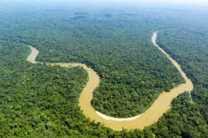
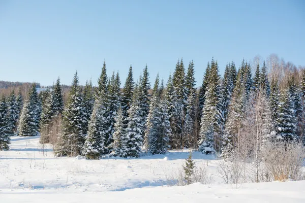
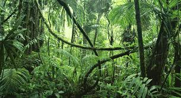
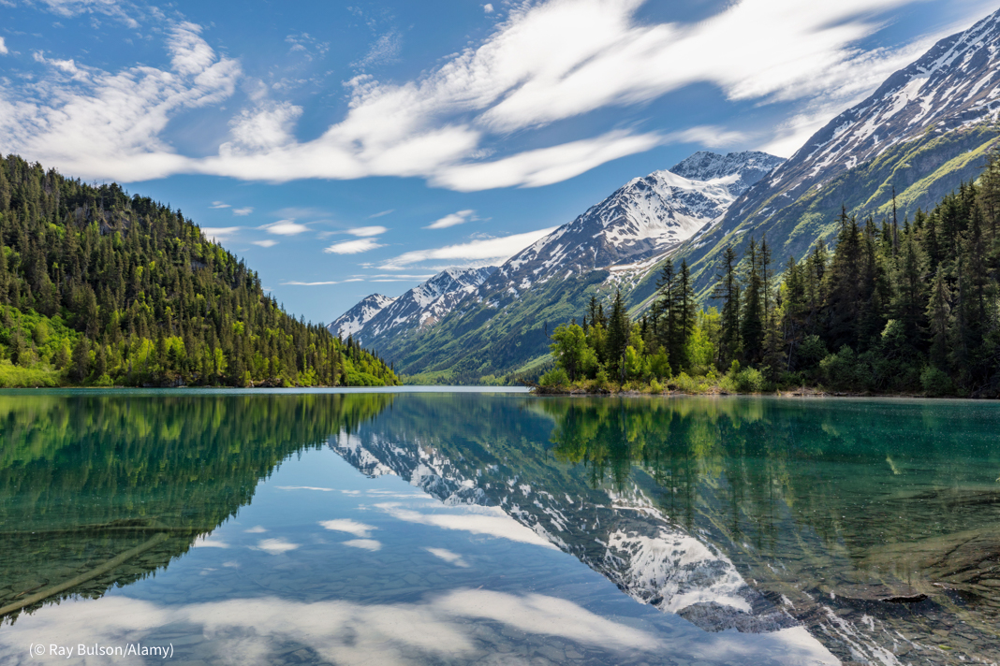

As florestas, vastos ecossistemas que abrigam uma diversidade incrivel de vida, desempenham um papel vital na saude do planeta. entre esses tesouros verdes, algumas se destacam como verdadeiras maravilhas da natureza, oculpando vastos extenções e oferecendo um lar unico para uma infinidade de especies. mais Informações

Click aqui
1. floresta amazonica: o pulmao do mundo
A floresta amazonica é inquestionavelmente, a rainha das florestas. Entendendo-se por aproximadamente 6,7 milhoes de quilometros quadrados, ela atravessa nove paises sul-americanos, incluindo o Brasil, Peru, Colombia e Venezuela. Alem de sua biodiversidade extraordinaria, a Amazonia desenpenha um papel crucial na regulação climatica global, absorvendo grandes quantidades de dioxido de carbono e produzindo oxigenio vital para a vida na terra
Mais informações Click aqui

2. Taiga Siberiana: A floresta Boreal Inplacavel
A Taiga Siberiana, também conhecida como Floresta Boreal, se estende por vastos áreas da Rússia, Canada, Alasca e Escandinaria,
Com cerca de 10 milhoes de quilometros quadrados, essa floresta fria é adaptada para suportar invernos rigorosos, com arvores resistentes, a Taiga abriga uma variedade surpreendente de vida selvagem, incluindo alces, ursos e lobos.
Mais Informações Click aqui

3. Floresta do Congo: tesouro verde Africano
Localizada na Africa central, a floresta do congo é a segunda maior floresta tropical do mundo, abragendo aproximadamente 3,7 milhoes de quilometrosquadrados. esta exuberante floresta é o lar de uma incrivel diversidade de especies, incluindo gorilas, chipanzes e elefantes. infelizmente, enfrenta ameaças crescentes de desmatamento e atividades humanas, destacando a importancia da coservação.
Mais Informações Click aqui

4. Floresta valdivana: A joia escondida do chile
A floresta valdiviana, situada no sul do chile e parte da argentina, é uma das ultimas florestas temperadas da terra. embora relativamente pequena em comparação com outros, cobrindo cerca de 248 mil quilometros quadrados, essa floresta é unica em sua riqueza de biodiversidade, com especies endemicas e uma paisagem deslumbrante de rios e lagos
Mais informações Click aqui

5. Floresta Nacional Tongass: O orgulho do alasca
A floresta Nacional Tongass, localizada no sudoeste do alasca, é a maio floresta temperada de chuva do mundo, cobrindo aproximadamente 69mil quilometros quadrados. Sua beleza cênica é acentuada por por glaciers, fiodes e uma incrivel diversidade de vida selvagem, tornado-a um destino imperdivel para os amantes da natureza
Mais informações Click aqui
essas Florestas representão verdadeiros tesouros naturais, desempenhando papeis papeis crucias na manutenção do equilibrio ecologico e na preservação da biodiversidade. no entanto, a pressão humana e as mudanças climaticas ameação esses ecossistemas preciossos, destacando a urgencia da conservação e da gestão sustentavl para garantir que as maiores florestas do mundo continuem a prosperar para as geracoes futuras.